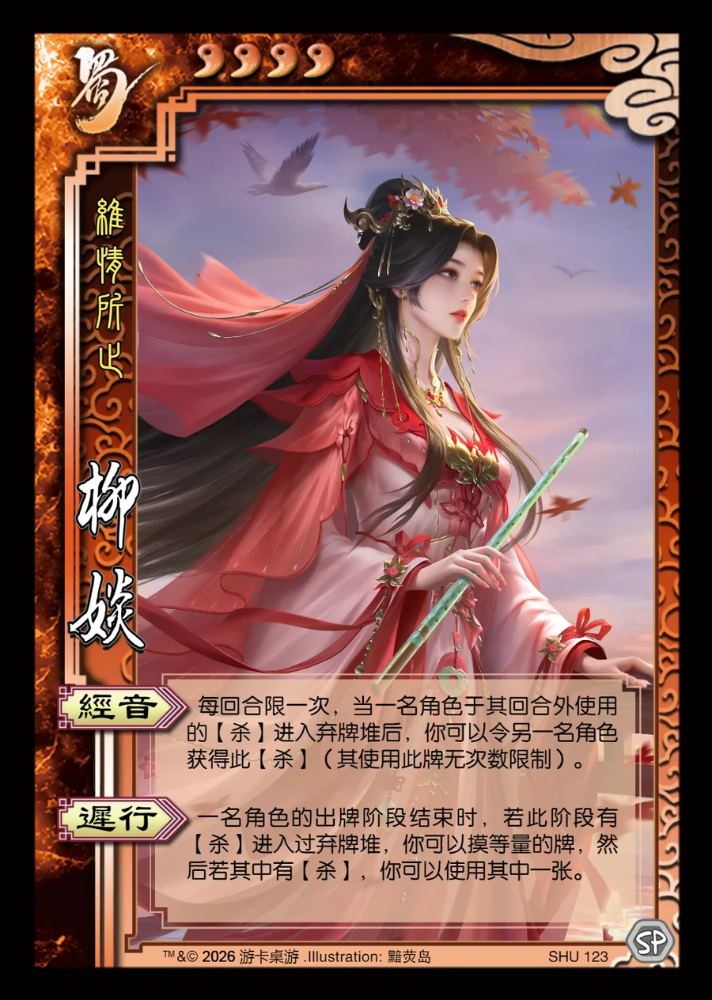

点击卡面查看大图
蜀
柳婒
♥3维情所止
经音
每回合限一次，当一名角色于其回合外使用的【杀】进入弃牌堆后，你可以令另一名角色获得此【杀】（其使用此牌无次数限制）。
迟行
一名角色的出牌阶段结束时，若此阶段有【杀】进入过弃牌堆，你可以摸等量的牌，然后若其中有【杀】，你可以使用其中一张。

点击卡面查看大图
维情所止
每回合限一次，当一名角色于其回合外使用的【杀】进入弃牌堆后，你可以令另一名角色获得此【杀】（其使用此牌无次数限制）。
一名角色的出牌阶段结束时，若此阶段有【杀】进入过弃牌堆，你可以摸等量的牌，然后若其中有【杀】，你可以使用其中一张。